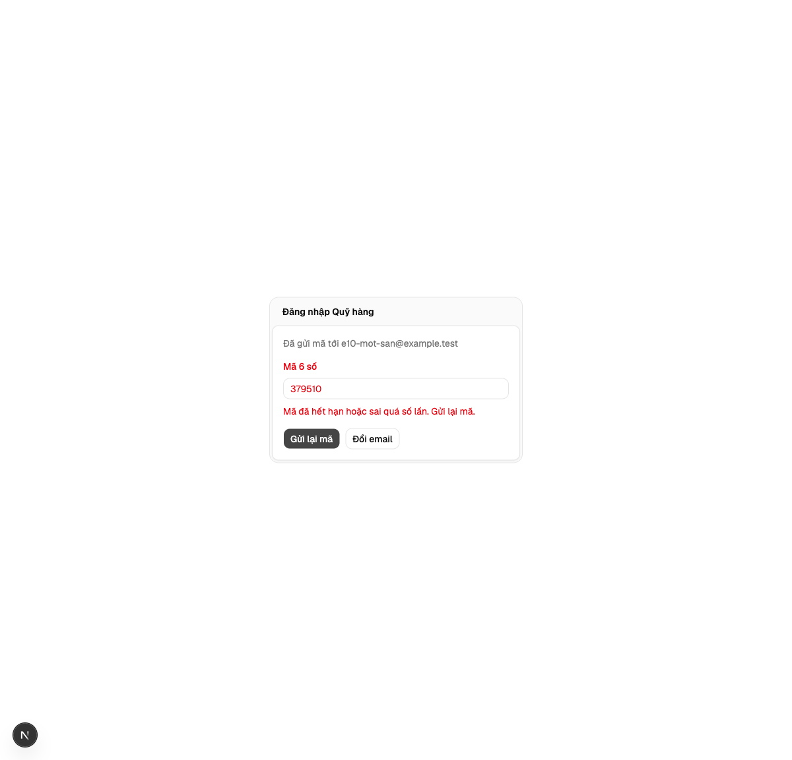
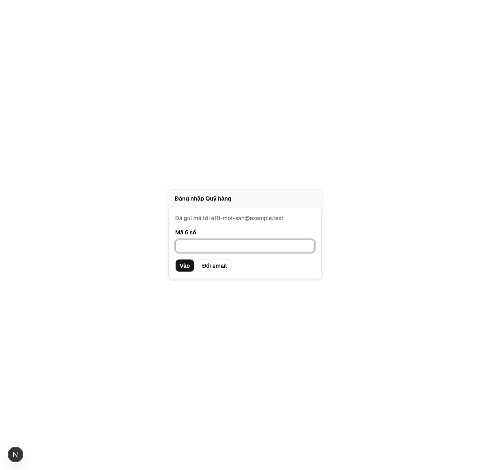
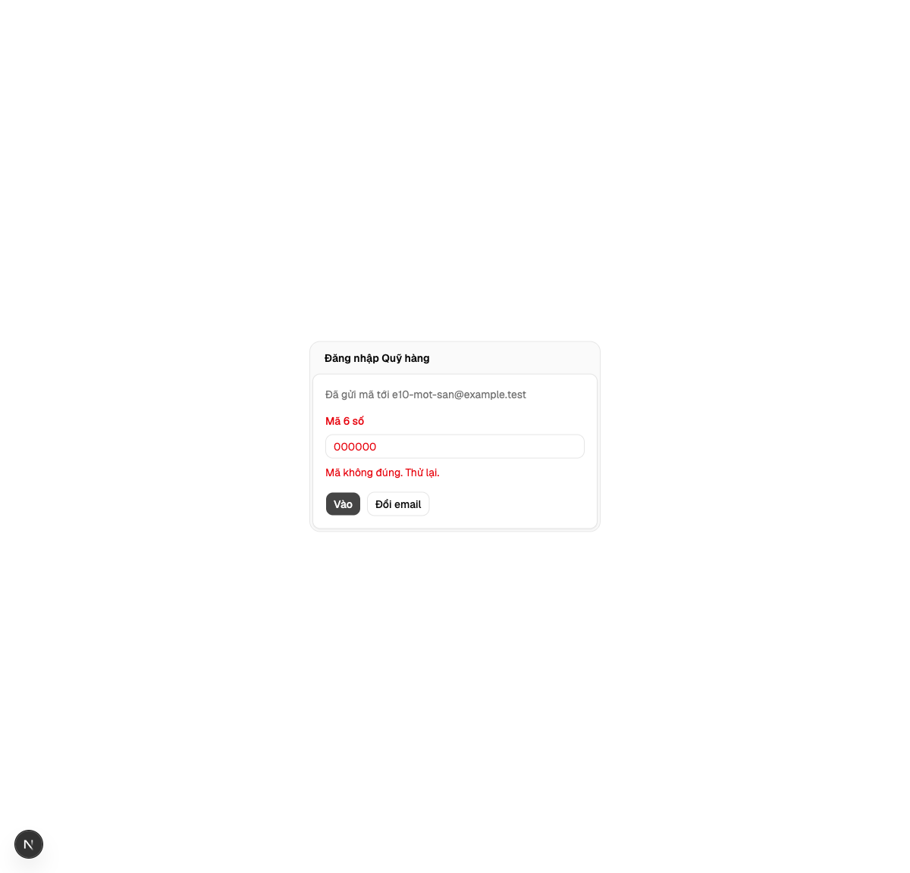
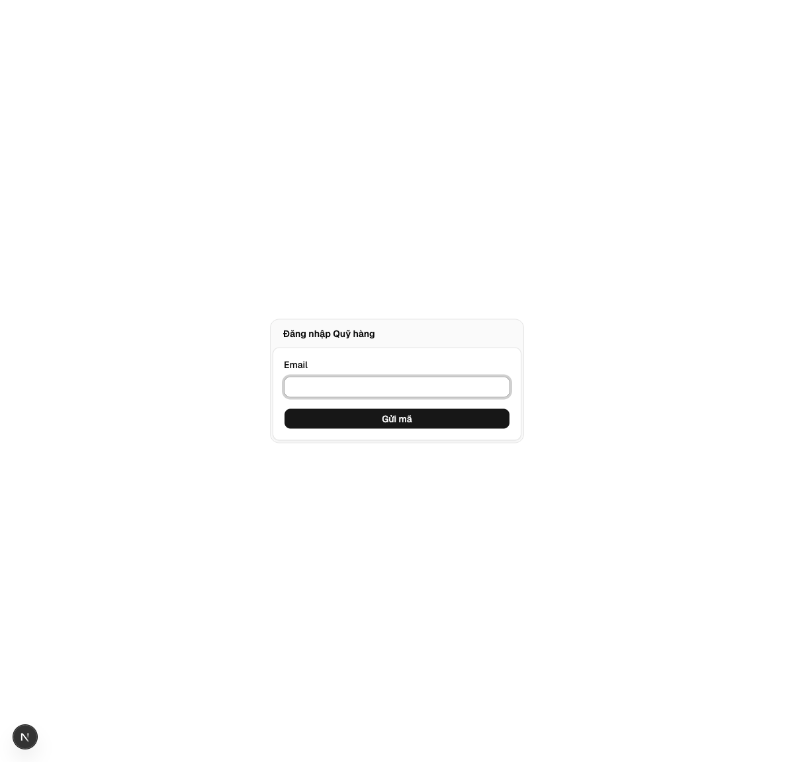
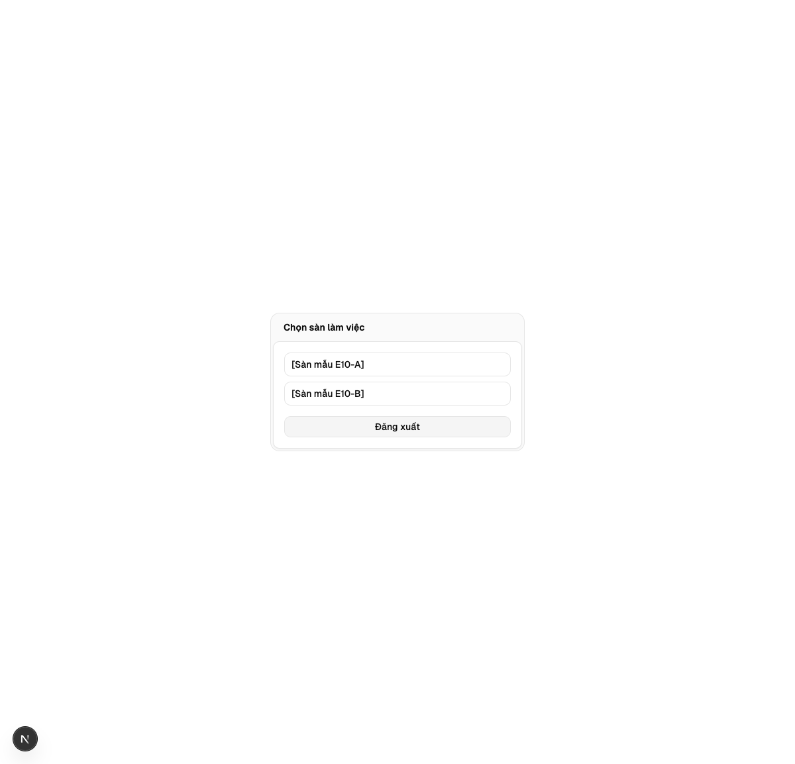
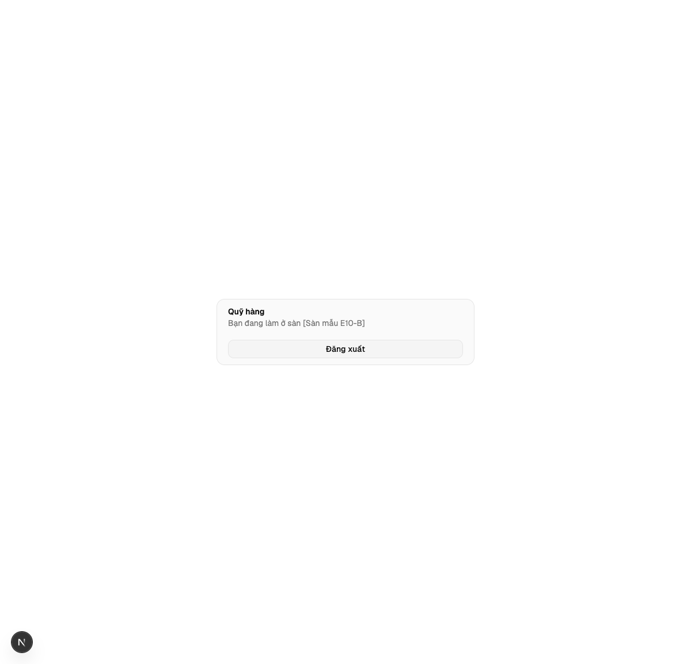
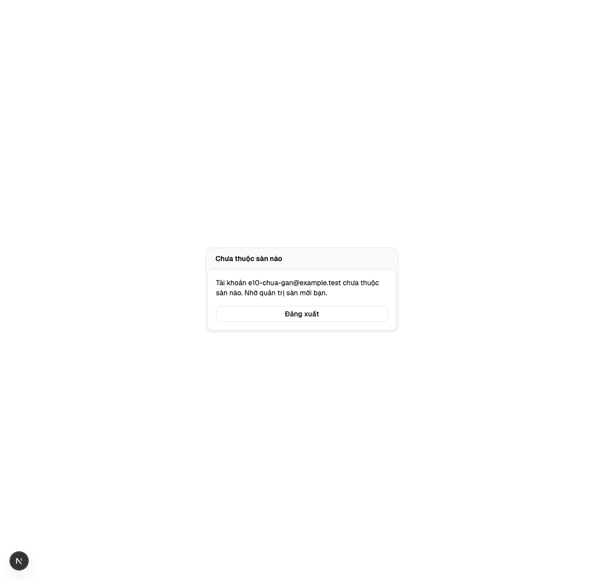

Người trong sàn đăng nhập và vào đúng vùng dữ liệu của sàn mình; chưa gắn sàn thì không thấy gì
Vì sao làm
Kiến trúc §9 bước 2; cách đăng nhập hỏi lại ở vòng này (Mạnh 29/10)
Đã hứa
- AC-1 — Given một email đã có tài khoản và một email lạ, When người xin mã đăng nhập, Then với email có tài khoản bộ
- AC-2 — Given một mã vừa gửi, When người nhập đúng mã trong 5 phút, Then API mở phiên (cookie phiên) và `GET /me` trả
- AC-3 — Given người thuộc đúng một sàn A, When gọi `GET /san`, Then API trả sàn A, đọc từ cơ sở dữ liệu trong một giao
- AC-4 — Given người đã đăng nhập mà chưa thuộc sàn nào, When gọi `GET /san`, Then API trả 403 `chua-gan-san` và không
- AC-5 — Given người thuộc sàn A và B, When chưa chọn sàn và gọi `GET /san`, Then API trả 409 `chon-san`; When chọn B
- AC-6 — Given chưa đăng nhập hay phiên đã đăng xuất, When gọi `GET /me`, `GET /san`, `POST /me/san`, Then API trả 401;
- AC-7 — Given cơ sở dữ liệu đã áp mọi migration, When chạy bộ kiểm cách ly, Then: bảng thành viên sàn bật và ép luật
- AC-8 — Given API đang chạy các luồng của AC-3, AC-4, AC-5 và luồng trọn của AC-10, When ghi lại mọi truy vấn chạm
- AC-9 — Given công cụ vận hành mở sàn (`packages/db`, chạy bằng tay trên kết nối chủ), When chạy với tên sàn và email,
- AC-10 — Given dev server với ba người mẫu — thuộc một sàn, thuộc hai sàn, chưa gắn sàn — When đi trọn luồng trên
- AC-11 — Given `NODE_ENV=production`, When dựng API mà không khai bộ gửi mã, Then dựng thất bại với thông điệp nêu
Thiết kế
docs/superpowers/specs/2026-10-30-dang-nhap-theo-san-design.md
Quyết định
- 2026-10-30 · Máy · approach · S1 — Đã tra tri thức: Người trong sàn đăng nhập và vào đúng vùng dữ liệu của sàn mình; chưa gắn sàn thì không thấy gìKho đã khai tri_thuc — bước thiết kế tra trang trước khi chọn.
- 2026-10-30 · Máy · descope · S1 — bỏ đường-đo — ô cơ hội chưa khai ngưỡng nào (bốn dòng «…»), không có thước để dựng đường_acceptance/dang-nhap-theo-san/opportunity.md mục «Ngưỡng chết / ngưỡng UAT» còn trống; Tham chiếu §13 ghi ngưỡng đặt ở Cổng Đáng của hàng đo.
- 2026-10-30 · Máy · approach · S1 — Cách đăng nhập bản đầu: email + mã 6 số qua email (nháp theo khuyến nghị, chờ chủ kho chốt)Kiến trúc §10 để câu này cho vòng đăng nhập theo sàn; đầu chủ ngồi máy tính nhưng đọc email trên điện thoại nên mã gõ được ở máy nào cũng xong, và luồng đổi sang số điện thoại + OTP không đổi màn.
- 2026-10-30 · Máy · approach · S1 — better-auth chỉ giữ danh tính; thành viên sàn là bảng company_members của Quỹ hàng có luật theo dòng, không dùng phần tổ chức của better-auth (nháp theo khuyến nghị, chờ chủ kho chốt)Sàn đã là bảng companies (ADR-0001); vai owner/admin/member của phần tổ chức không khớp năm vai và một người nhiều vai có khu (Tham chiếu §2); Kiến trúc §5 lại ghi phần tổ chức nên lệch nguồn phải để người chốt.
- 2026-10-30 · Máy · approach · S1 — Màn đăng nhập dựng tối giản đúng luồng và đủ trạng thái, không cài ReUI; chuyển thể khối auth-15 là việc nhỏ sau khi hàng 4 gộp (nháp theo khuyến nghị, chờ chủ kho chốt)Khối đích auth-15 đã chọn ở docs/design/vo-va-ia.md nhưng ReUI chưa cài — hàng 4 ở dãy G đang cài song song; luật «chọn trên kho trước» và lịch song song của đợt kéo hai hướng.
- 2026-10-30 · Máy · approach · S1 — Dùng better-auth (plugin emailOTP) cho danh tính thay vì tự viết phiên và mãADR-0001 mục «Chưa chốt» đặt better-auth làm hướng khởi điểm; CRM đang chạy nó.
- 2026-10-30 · Máy · approach · S1 — Bảng tài khoản và phiên của better-auth nằm ở schema auth, vai quy_hang_app không có quyền gì trên đó; không đặt ở publicBộ kiểm cách ly đòi mọi bảng ở public bật luật theo dòng theo công ty, mà danh tính một người không thuộc một công ty; tách schema và tước quyền vai API là cách duy nhất giữ ca kiểm ấy nguyên văn.
- 2026-10-30 · Máy · approach · S1 — Test cần Postgres của API chạy trong lệnh gốc db:test, để job isolation của CI chạy chúngJob check của CI không có Postgres; job isolation có và chạy npm run db:test; tệp CI nằm trong danh sách bảo vệ của đợt.
- 2026-10-30 · Máy · approach · S1 — Người chưa có tài khoản tự tạo tài khoản ở lần nhập mã đúng đầu tiên; chưa gắn sàn thì không thấy dữ liệu nàoCâu giao của hàng nói rõ trạng thái người đã đăng nhập mà chưa gắn sàn; hàng 7 gắn người vào sàn theo email.
- 2026-10-30 · Máy · descope · S1 — bỏ gửi email thật — bản này chỉ có bộ gửi dev in mã ra nhật ký máy chủ; production chưa khai bộ gửi thì máy chủ từ chối khởi độngNơi chạy chưa tạo (ADR-0001 mục «Chưa chốt»); chọn nhà cung cấp email là cam kết ngoài kho.
- 2026-10-30 · Máy · descope · S1 — bỏ design-pass — ReUI chưa cài (hàng 4 đang dựng ở dãy G) nên chưa có bản bấm được theo chuẩn để duyệt; màn tối giản, bảng trạng thái ở bản thiết kế, khung chụp ở E10Nghi thức S1-D duyệt thẩm mỹ trên bản dựng bằng khối của kho; khối auth-15 chưa cài được trong dãy này (Hỏi-3).
- 2026-10-30 · Máy · approach · S1 — Chỉ email đã có tài khoản mới nhận mã; người lạ không tự tạo tài khoản (nháp theo khuyến nghị, chờ chủ kho chốt)Phản biện chỉ ra câu giao không quyết chuyện người lạ được tự tạo tài khoản; khi gắn bộ gửi email thật, cửa tự đăng ký cho bất kỳ ai bắt Quỹ hàng gửi thư tới địa chỉ tuỳ ý.
- 2026-10-30 · Máy · approach · S1 — giữ cỡ — mười một tiêu chí: hai tiêu chí an ninh phản biện thêm (xin mã quá số lần, production thiếu bộ gửi) là điều kiện để mở đăng nhập, tách ra thì vòng này ship một cửa đăng nhập hởPhản biện P1 trong gap-probe.md: bộ gửi dev in mã ra nhật ký và vét mã không giới hạn; AC-1 gộp giới hạn xin mã, AC-11 là chặn production.
- 2026-10-30 · Máy · approach · S1 — giữ cỡ — mười một tiêu chí: hai tiêu chí an ninh phản biện thêm (xin mã quá số lần, production thiếu bộ gửi) là điều kiện để mở đăng nhập, tách ra thì vòng này ship một cửa đăng nhập hởPhản biện P1 trong gap-probe.md: bộ gửi dev in mã ra nhật ký và vét mã không giới hạn; AC-1 gộp giới hạn xin mã, AC-11 là chặn production.
- 2026-10-30 · Người · seal · gate1 —
- 2026-10-30 · Máy · revisit · S2 — Đổi tên schema danh tính từ auth sang identity — cần sửa đúng một từ trong lời AC-7 đã ký, trình ở lần duyệt kế hoạchKiến trúc §5 chọn Postgres trên Supabase, mà Supabase giữ sẵn schema auth cho hệ đăng nhập của chính nó; đặt bảng của mình vào đó là đụng vùng nhà cung cấp quản.
- 2026-10-30 · Người (Manh Phan) · approach · gate1 — Kế hoạch sáu việc được duyệt; lời AC-7 đổi một từ: schema auth thành schema identityngười chọn ở lần duyệt kế hoạch (Gate 1.5): kế hoạch dang-nhap-theo-san: duyệt
- 2026-10-30 · Máy · fix · S3 — Phép soát mã nguồn của AC-8 tính «gọi truy vấn» là mở kết nối hay chạy câu thẳng trên pool, hoặc dựng Pool/Client mới; câu chạy trên kết nối mà withCompany trao không bị tínhĐường /san và việc đọc danh sách sàn phải chạy câu SQL bên trong hàm gọi lại của withCompany (packages/api/src/auth/company.ts, app.ts); tính mọi «.query(» thì chính cửa duy nhất cũng thành vi phạm. Lớp thời chạy (E8b) vẫn đếm 100% câu chạm bảng public mang vai quy_hang_app.
- 2026-10-30 · Máy · fix · S3 — E10 khai thêm mã 403 của lần nhập mã sau ba lần sai vào danh sách 4xx được phép trên mạngChạy thử trên trình duyệt: better-auth trả 403 TOO_MANY_ATTEMPTS ở bước khung 10 (ST-dang-nhap-ma-het) — đây là hành vi đúng của tiêu chí, không phải lỗi mạng; không khai thì E10 đỏ oan theo luật mạng của ui-check.
- 2026-10-30 · Máy · fix · S3 — Bước dựng dev của E10 trỏ cấu hình web-q trong .claude/launch.json thay cho câu tả chung; lệnh db đọc .env.local ở gốc kho khi cóThử cho thấy tác tử phụ không mang biến môi trường của phiên (DATABASE_URL trống), nên bộ chấm cần một chỗ đọc cố định cho địa chỉ Postgres dãy Q.
- 2026-10-30 · Máy · fix · S4-r2 — Gộp nhánh chính trước khi gộp PR: màn đăng nhập, chọn sàn, chưa gắn sàn chuyển sang thành phần đã cài (Frame, Field, Input, Button) và ADR của hàng đổi số 0003 thành 0005Hàng 4 vừa gộp mang luật lint quy-hang-ui/no-raw-controls (8 lỗi ở màn tối giản); số ADR 0003 trên main đã thuộc bài thử Zalo và dãy T giữ 0004 (giám sát nhắc).
Bằng chứng
Các eval
| Eval | Tiêu chí | Loại | Verdict | run_id | verified_at |
|---|---|---|---|---|---|
| E1 | AC-1 | test | PASS | minted-dang-nhap-theo-san-E1-r2 | 2026-10-30T07:36:35Z |
| E2 | AC-2 | test | PASS | minted-dang-nhap-theo-san-E2-r2 | 2026-10-30T07:36:35Z |
| E3 | AC-3 | test | PASS | minted-dang-nhap-theo-san-E3-r2 | 2026-10-30T07:36:35Z |
| E4 | AC-4 | test | PASS | minted-dang-nhap-theo-san-E4-r2 | 2026-10-30T07:36:35Z |
| E5 | AC-5 | test | PASS | minted-dang-nhap-theo-san-E5-r2 | 2026-10-30T07:36:35Z |
| E6 | AC-6 | test | PASS | minted-dang-nhap-theo-san-E6-r2 | 2026-10-30T07:36:35Z |
| E7 | AC-7 | test | PASS | minted-dang-nhap-theo-san-E7-r2 | 2026-10-30T07:36:35Z |
| E8 | AC-8 | test | PASS | minted-dang-nhap-theo-san-E8-r2 | 2026-10-30T07:36:35Z |
| E8b | AC-8 | test | PASS | minted-dang-nhap-theo-san-E8b-r2 | 2026-10-30T07:36:35Z |
| E9 | AC-9 | test | PASS | minted-dang-nhap-theo-san-E9-r1 | 2026-10-30T06:00:48Z |
| E10 | AC-10 | ui-check | PASS | minted-dang-nhap-theo-san-E10-r2 | 2026-10-30T07:36:35Z |
| E11 | AC-10 | test | PASS | minted-dang-nhap-theo-san-E11-r2 | 2026-10-30T07:36:35Z |
| E12 | AC-11 | test | PASS | minted-dang-nhap-theo-san-E12-r2 | 2026-10-30T07:36:35Z |
Chi tiết từng eval
PASS E1 · test
AC-1: Given một email đã có tài khoản và một email lạ, When người xin mã đăng nhập, Then với email có tài khoản bộ
cmd: npm run db:migrate && npm run db:test ℹ duration_ms 463.177709
PASS E2 · test
AC-2: Given một mã vừa gửi, When người nhập đúng mã trong 5 phút, Then API mở phiên (cookie phiên) và `GET /me` trả
cmd: npm run db:migrate && npm run db:test ℹ duration_ms 463.177709
PASS E3 · test
AC-3: Given người thuộc đúng một sàn A, When gọi `GET /san`, Then API trả sàn A, đọc từ cơ sở dữ liệu trong một giao
cmd: npm run db:migrate && npm run db:test ℹ duration_ms 463.177709
PASS E4 · test
AC-4: Given người đã đăng nhập mà chưa thuộc sàn nào, When gọi `GET /san`, Then API trả 403 `chua-gan-san` và không
cmd: npm run db:migrate && npm run db:test ℹ duration_ms 463.177709
PASS E5 · test
AC-5: Given người thuộc sàn A và B, When chưa chọn sàn và gọi `GET /san`, Then API trả 409 `chon-san`; When chọn B
cmd: npm run db:migrate && npm run db:test ℹ duration_ms 463.177709
PASS E6 · test
AC-6: Given chưa đăng nhập hay phiên đã đăng xuất, When gọi `GET /me`, `GET /san`, `POST /me/san`, Then API trả 401;
cmd: npm run db:migrate && npm run db:test ℹ duration_ms 463.177709
PASS E7 · test
AC-7: Given cơ sở dữ liệu đã áp mọi migration, When chạy bộ kiểm cách ly, Then: bảng thành viên sàn bật và ép luật
cmd: npm run db:migrate && npm run db:test ℹ duration_ms 463.177709
PASS E8 · test
AC-8: Given API đang chạy các luồng của AC-3, AC-4, AC-5 và luồng trọn của AC-10, When ghi lại mọi truy vấn chạm
cmd: npm test -w @quy-hang/api ℹ duration_ms 60495.6455
PASS E8b · test
AC-8: Given API đang chạy các luồng của AC-3, AC-4, AC-5 và luồng trọn của AC-10, When ghi lại mọi truy vấn chạm
cmd: npm run db:migrate && npm run db:test ℹ duration_ms 463.177709
PASS E9 · test
AC-9: Given công cụ vận hành mở sàn (`packages/db`, chạy bằng tay trên kết nối chủ), When chạy với tên sàn và email,
carry-forward tu round 1 — delta khong cham paths cua eval
PASS E10 · ui-check
AC-10: Given dev server với ba người mẫu — thuộc một sàn, thuộc hai sàn, chưa gắn sàn — When đi trọn luồng trên










PASS E11 · test
AC-10: Given dev server với ba người mẫu — thuộc một sàn, thuộc hai sàn, chưa gắn sàn — When đi trọn luồng trên
cmd: npm run db:migrate && npm run db:test ℹ duration_ms 463.177709
PASS E12 · test
AC-11: Given `NODE_ENV=production`, When dựng API mà không khai bộ gửi mã, Then dựng thất bại với thông điệp nêu
cmd: npm test -w @quy-hang/api ℹ duration_ms 60495.6455
Eval không phân biệt (Analyst)
Vòng verify
- Round 1: mọi eval (E1-E12, kể cả E8b) đạt, không eval nào đỏ. Không cần quay lại triển khai.
- Round 2: sau khi merge main vào nhánh (màn đăng nhập dựng lại bằng thành phần chuẩn), chạy lại E1-E8, E8b, E10, E11, E12 và sáu lệnh suite, tất cả đạt; E9 mang sang từ round 1 vì delta không chạm paths của eval. Không cần quay lại triển khai.
Tài nguyên
| Khối | Tác tử | Token đầu ra |
|---|---|---|
| S4 round 1 | 13 | 83.660 |
| S4 round 2 | 16 | 63.010 |
2 lượt chấm · tổng 146.670 token
Giới hạn và ngoài hợp đồng
- Mời người vào sàn, đặt vai, khu phụ trách, quyền theo vai — hàng 7 `moi-nguoi-vai-khu`.
- Bộ chọn sàn trong vỏ app, cột nhà, thanh trên — hàng 53 `vo-ung-dung`; hàng này chỉ có màn chọn sàn giữa trang.
- Gửi email thật (nhà cung cấp, tên miền gửi) — hàng nơi chạy; bản này chỉ có bộ gửi dev in mã ra nhật ký máy chủ.
- Đăng nhập bằng Google hay số điện thoại + OTP — theo câu trả lời Hỏi-1.
- Quyền hỗ trợ có hạn cho đội vận hành vào dữ liệu một sàn — hàng riêng.
- Khối ReUI `auth-15` cho màn đăng nhập — theo câu trả lời Hỏi-3 (khuyến nghị: việc nhỏ sau khi hàng 4 gộp).
Giao
chưa ghi quan sát production
Giá trị
- Câu hỏi phép đo trả lời: … — chưa đo
- Kết quả nào là SỐNG: … — chưa đo
- Kết quả nào là CHẾT: … — chưa đo
- Timebox: … — chưa đo